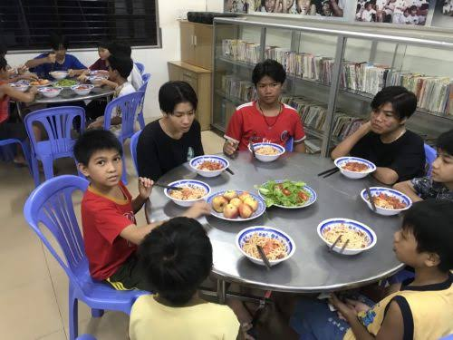

(Thay ảnh tại đây)
Giới thiệu
Mái ấm Sơn Kỳ là nơi chăm sóc và chở che cho những hoàn cảnh kém may mắn. Trải qua 20 năm hình thành và phát triển, mái ấm đã trở thành mái nhà chung, mang lại tình yêu thương và hy vọng cho nhiều mảnh đời khó khăn.
Người sáng lập
Mái ấm Sơn Kỳ được sáng lập bởi ông Nguyễn Đức Mạnh, với mong muốn xây dựng một môi trường ấm áp, nhân ái, nơi các em được quan tâm, chăm sóc và phát triển toàn diện.

(Ảnh sinh hoạt / hoạt động – bạn thay ảnh)
Ý nghĩa
Không chỉ là nơi sinh sống, Mái ấm Sơn Kỳ còn là nơi nuôi dưỡng ước mơ, giáo dục nhân cách và giúp các em có cơ hội hướng tới tương lai tốt đẹp hơn.